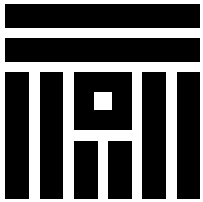

<div class="navigation">
    <mat-toolbar color="primary" class="">

        <div *ngIf="(authService.firebaseAuth.user | async)" class="user-panel">
            <a mat-flat-button (click)="logout()">Deconectare</a>
            <button mat-icon-button [matMenuTriggerFor]="user_menu">
                <mat-icon>account_circle</mat-icon>
            </button>

            <mat-menu #user_menu>
                <button mat-menu-item>
                    <mat-icon>person</mat-icon>
                    <span>Informații cont</span>
                </button>
                <button mat-menu-item>
                    <mat-icon>lock</mat-icon>
                    <span>Schimbă parola</span>
                </button>
            </mat-menu>

        </div>

    </mat-toolbar>

    <mat-drawer-container class="example-container" autosize>
        <mat-drawer #drawer [opened]="(authService.firebaseAuth.user | async)" class="example-sidenav" mode="side">

            <div class="menu-container">
                <mat-nav-list>

                    <div *ngFor="let menuItem of menuItems" class="menu-item-container" [class]="menuItem.class">
                        <a mat-list-item [routerLink]="menuItem.route" routerLinkActive="active"
                            *ngIf="menuItem.hasAcces">{{menuItem.name}}</a>
                    </div>

                </mat-nav-list>
                <div class="logo-container">
                    
                </div>
            </div>

        </mat-drawer>
        <router-outlet></router-outlet>
    </mat-drawer-container>
</div>